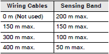

Building Automation
Industrial Automation
Power Automation & Safety


Bangladesh Distributor
Contact Sensors / Liquid Leakage Sensors
|
|
Features |
| Principles | Classifications |
| Engineering Data | Further Information |
| Explanation of Terms | Troubleshooting |
Related Contents
- Contact Sensors / Liquid Leakage Sensors
Technical Explanation for Liquid Leakage Sensors
Countermeasures Against Noise
Noise Canceller Function for Highly Sensitive Impedance Detection
The K7L Liquid Leakage Sensor Amplifier detects liquids with impedance as high as 50 MΩ and connects to the Sensing Band through a cable that can be extended up to 50 meters.
Countermeasures against external noise are especially important for the Sensing Band and connecting cable because they pick up external noise like an antenna. The K7L incorporates the noise canceller function described below.
Connected with 3-conductor Cable that Offsets Inductive Noise (Patent Pending)
A VCT cable with three conductors (lines) is used. Line 1 is connected to the Sensing Band and line 2 is left open. Lines 1 and 2 are almost in the same position and thus will experience the same noise level.
The K7L obtains the difference between these signals. This means that the noise signals in lines 1 and 2 are offset against each other and a reading for the signal, without inductive noise, can be made.
Detecting Liquid Leakage at Multiple Places
K7L-AT50
Note:
1. When wiring, be sure not to exceed the maximum possible wiring distances for both the connecting cable and the Sensing Band. Exceeding these distances may lead to faulty operation. Connect one Sensing Band to each Terminal Block.
2. Not applicable to K7L-AT50D.
K7L-U
Note:
1. When wiring, be sure not to exceed the maximum possible wiring distances for both the connecting cable and the Sensing Band. Exceeding these distances may lead to faulty operation. Connect one Sensing Band to each Terminal Block.
2. Not applicable to K7L-UD.
Wiring Distances for Sensing Band and Point Sensors
The wiring distance depends on the devices that are connected.
Check the models of the Sensing Band, Point Sensors, and connected device and refer to the following table.
Connected Devices
K7L-series Liquid Leakage Sensor Amplifiers
61F-GPN-V50 Water Leak Detectors
Table 1: Sensing Band Wiring Distances (Including Parallel Connections, Cable Cross-sectional Area: 2 mm2)
| Type | Model | Combined Liquid Leakage Sensor Amplifier | ||
| Liquid Leakage Sensor Amplifiers for Long- distance Wiring | Liquid Leakage Sensor Amplifiers | Water Leak Detectors | ||
| K7L-U[] (no disconnection detection function) K7L-UD[] (with disconnection detection function) *1 | K7L-AT50[] (no disconnection detection function) K7L-AT50D[] (with disconnection detection function) *1 | 61F-GPN-V50 | ||
| Sensing Band | F03-15 | Total of 400 m max. for wiring cables, Sensing Band, and Point Sensors | Total of 60 m max. for wiring cables, Sensing Band, and Point Sensors Sensing Band length: 10 m max. | The longer the wiring cables, the shorter the length of Sensing Band that can be connected. Table 2  |
| F03-16PE | ||||
| F03-16PT | ||||
| F03-16SF | ||||
| F03-16SFC | ||||
| Point Sensor *2 | F03-16PS | |||
*1. Point Sensors can not be used with models that have disconnection detection function. Also, Sensing Bands cannot be connected in parallel.
*2. Point Sensors come with two 2-meter cables. Think of these cables as the wiring cables.
Example: Parallel Connection of 61F-GPN-V50, Point Sensors and a Sensing Band
Find the wiring cable length and Sensing Band length from Table 2.
The wiring cable length is the total for wiring cable A and wiring cable B (the cables attached to the Point Sensor) in the following figure.
When five Point Sensors are used, the total for wiring cable B is 2 meters x 2 cables x 5 Sensors (20 m).
The length of wiring cable A (100 meters) plus the length of wiring cable B (20 meters) gives a wiring cable length of 120 meters.
This corresponds to a wiring cable length of 150 max. in Table 2, so the maximum length of Sensing Band that can be connected is 150 meters.
Example: Parallel Connection of K7L-AT50 or K7L-U, Point Sensors, and a Sensing Band
Check the total lengths of wiring cable A and wiring cable B and the Sensing Band in the following figure.
Wiring Cable B (Cables Attached to Point Sensors)
Point Sensors come with two 2-meter cables attached, so if two Point Sensors are used, the total for wiring cable B is 2 meters x 2 cables x 2 Sensors (8 m).